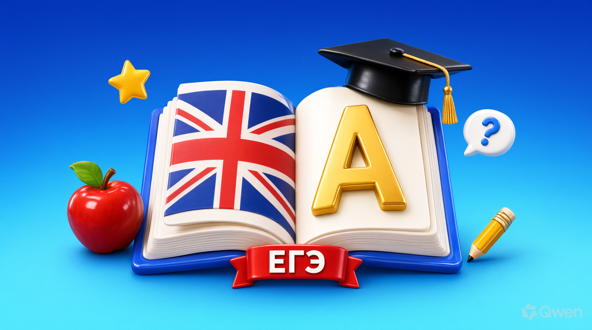

Я обожаю Английский язык на ЕГЭ, сдала ОГЭ по этому предмету на максимальный балл
Для меня английский — не «ещё один предмет в расписании», а способ думать. Он появился в моей жизни давно, а в девятом классе я решила проверить себя по-настоящему и выбрала его для ОГЭ. Подготовка оказалась увлекательнее, чем я ожидала: каждый пробник — как маленькое расследование, где нужно услышать, понять и точно сформулировать.
Результат — максимальный балл. Но главное, что дал мне этот экзамен: я убедилась, что система честная. Она вознаграждает регулярность, внимательность и любовь к деталям. Теперь моя цель — ЕГЭ, и я иду к ней с тем же азартом.
ни пуха ни пера всем, кто сдаёт! ✦